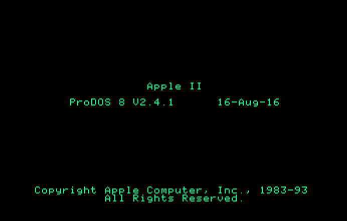

Announcing ProDOS 2.4.1 for all Apple II and compatible computers

New version: ProDOS 2.4.2 is available here.
ProDOS 2.4.1 adds several improvements and bug fixes to ProDOS 2.4.
- Includes ROM ID detection for many Apple II clones, and workarounds for clone firmware bugs.
- Franklin Ace
- Laser 128
- Unitron
- Pravetz
- Updates MiniBas to version 1.2.
- Fixes a bug when launching ProDOS 2.4 from GS/OS using Closed-Apple to activate Bitsy Bye.
- Fixes a ROM bug in un-enhanced Apple //e when quitting to Bitsy Bye with 80-column mode enabled.
- Files on disk have been organized for faster booting and file access.
- ProDOS 2.4.1 moves GS/OS support code to the end of the file. This allows PRODOS to be shortened by 1K when used on compilation disks or other 8-bit use-cases where PRODOS will not be used as SYSTEM/P8.
- As a minor update, the ProDOS 2.4.1 KVERSION byte at $BFFF is the same as ProDOS 2.4, (I.E., $24)
Bitsy Bye is only $300 bytes long yet hides an Easter egg. Who will find it first?
Download
140k ProDOS 2.4.1 disk image: ProDOS_2_4_1-dsk
Enjoy.
-JB
John Brooks
Twitter: @JBrooksBSI